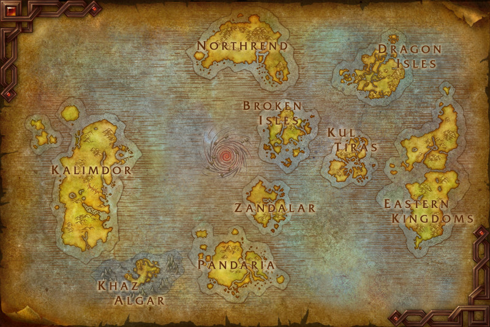

Cansado de depender da sorte nos drops ou de passar horas na Casa de Leilões? Cansado de suas raides só terminam em wipe?
O Kalimdor Express resolve o seu
problema! Trazemos os melhores utensílios
direto de Azeroth e entregamos pelos correios. Independente
de sua facção, seja;
Aliança ] ou Horda [
Esqueça o farm, compre conosco!
Você deve estar se perguntando: como um mercador de Azeroth conseguiu abrir uma loja na "Internet"?
Graças a uma mistura um tanto instável de Engenharia Gnomênica e feitiços de Dalaran, nós quebramos a barreira entre os mundos! Confira mais sobre clicando aqui.

Estamos aqui para equipar todo o continente de Kalimdor com os artefatos mais cobiçados dos Reinos do Leste, Kalimdor, Nortundria e além.
1. Escolha seu item no catálogo de Produtos
2. Realize sua encomenda mágica
3. Receba direto no seu inventário via correio de Azeroth